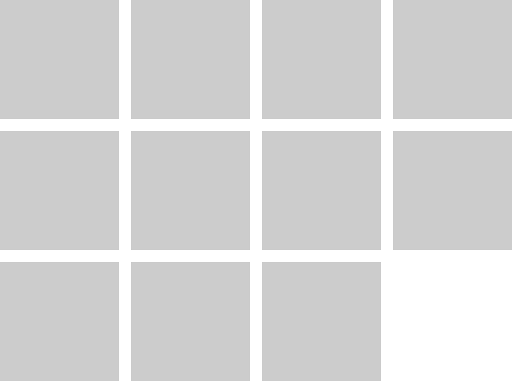

Tiles
Tiles are the primary layout framework for organizing repeating or modular content on the page. They are set up with a fixed number of tiles along the x-axis at full width, and can contain an infinite number of tiles that wrap fluidly depending on browser size.
Usage
Tiles are implemented with the class cl-tiles
Tiles support grids with two, three, four, or five tiles in width. The number of tiles across the page can be controled by the classes halves, thirds, fourths, and fifths, respecively. Tile grids can contain an infinite number of tiles.
3 Tiles Across
4 Tiles Across
5 Tiles Across
Tiles can be square
By default, tiles adjust to the size of their content. To override this format and force tiles be square, and crop their content accordingly, add the class square
Tiles can be compact
By default, each tile has a small margin that separates it from other surrounding tiles. To eliminate this margin and force tiles to but up against one another, add the class compact
Both default tiles and square tiles can be compact.
Tile loading can be animated
In some cases, especially when tiles are dynamically generated, the display of each tile can be delayed via the generating script. To animate this, add the class reveal
Shortcode Support
Tiles can be implemented with the shortcode cl-tiles
[cl-tiles across=4]...[/cl-tiles]
The tiles shortcode supports nested shortcodes, which makes it easy to include other components within the tile framework via shortcode.
Attributes
accross (num) (optional) (values: 2, 3, 4, 5)
The maximum number of tiles to display per row
(default value: 3)
square (bool) (optional)
Set to force tiles be square and crop their content accordingly
(default value: false)
compact (bool) (optional)
Set to eliminate margins around tiles
(default value: false)
animated (bool) (optional)
Set to animate tiles when added to the page
(default value: false)